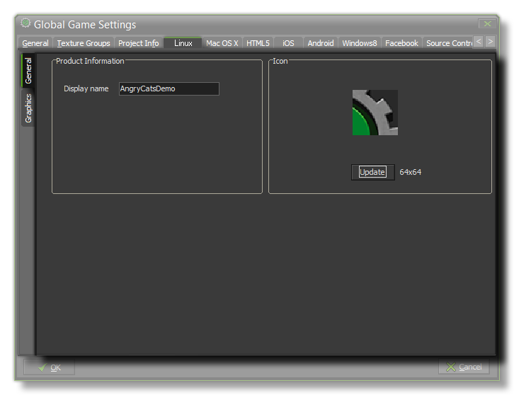
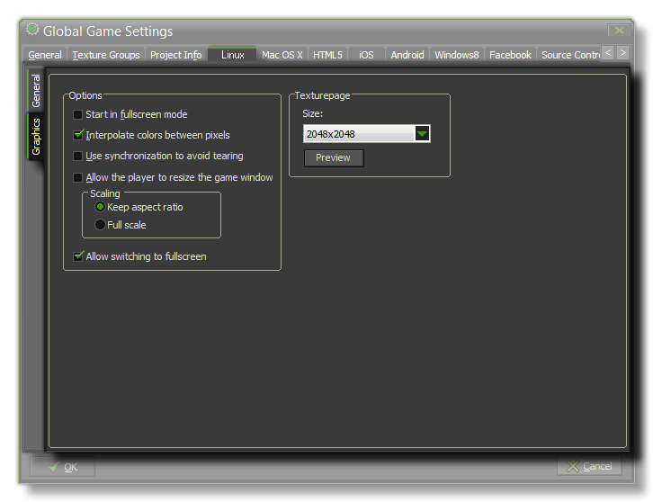

This Ubuntu (Linux) tab is split into two separate sub-tabs (accessible on the left of the window) to make changing and updating the information for your game clearer and less complicated. These tabs are explained in the following sections.
 This tab is where you set the name of your game as it is to be displayed while running, and the game icon that will be used for it. The icon must be a 64x64 pixel image in the *.png format.
 The graphics options will determine how your game is displayed when run and affect the way things like scaling and interpolation are handled. The following options exist:
- Start In Fullscreen Mode - If this is checked, the game will start in fullscreen mode.
- Interpolate Colors Between Pixels - Turns on interpolation, which basically "smooths" pixels. for crisp pixel graphics, it should be off, but if you have nice alpha blends and smoothed edge graphics it is better left on.
- Use Synchronization To Avoid Tearing - This toggles v-sync on or off. Note, that if you have a game with a roomspeed of 120 and the player has a monitor with a refresh rate of 60, turning this option on will lock your game speed to 60 too.
- Allow The Player To Resize The Game Window - Checking this permits the user to change the size of the game window.
- Scaling - Here you can choose to maintain aspect ratio (so a 4:3 room will be "letterboxed" on a 16:9) or to scale fully (stretching the image to fit the full screen).
- Allow Switching To Fullscreen - Checking this will allow the user to toggle the game from windowed to fullscreen mode using <CNTRL> + <CMD> + <F>.
Finally there is the option to set the size of the Texture Page. The default (and most compatible) size is 2048x2048, but you can choose from anywhere between 256x256 up to a
whopping 8192x8192! There is also a button marked View which will generate the texture pages for this platform and then open a window so that you can see how they look. This can be
very useful if you wish to see how the texture pages are structured and to prevent having texture pages larger (or smaller) than necessary.
NOTE : Be aware that the larger the size of the texture page, the less compatible your game will be.